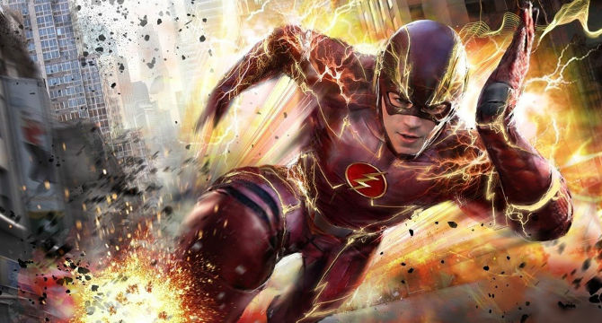
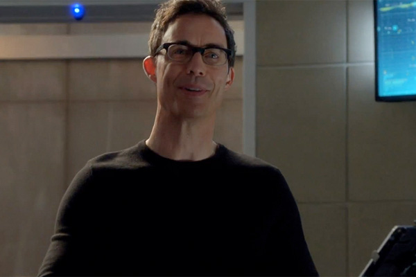
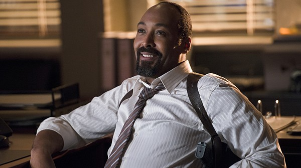
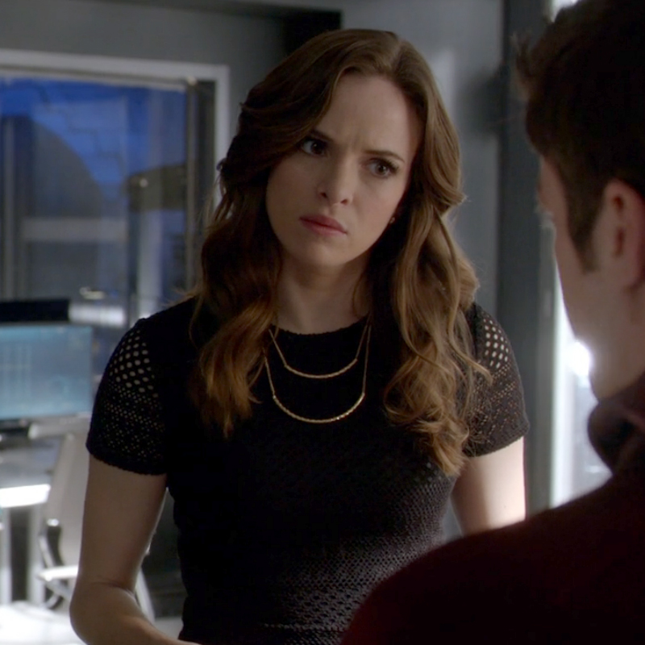
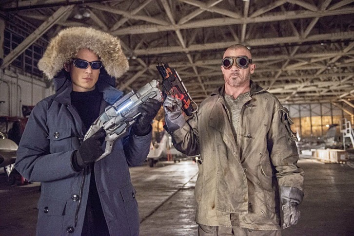

The Flash
Diziyi İlk Defa İzleyecekler İçin En Fenasından Spoiler İçeren Kısımlar Var
Son zamanlarda kendime aşırı vakit ayırıyorum öyle ki yazdığım kod sayısını satırla anlatacak olsaydım sanırım izlediğim dizi bölümünden daha az olurdu. Bir süredir daha önceleri izlemediğim Fringe dizisi ile uğraştaydım. Tabi o diziyi izleyenler biliyordu nasıl bağımlılık yaratacağını. Bu sırada ayrıca Dr. Walter Bishop gibi bir dehayı arayacağımızı da biliyordu diziyi izleyenler.
Fringe dizisini bitirdim pişmanım aslında kısa sürede bitirdiğim için örneğin Olivia Dunham'ın FBI diye o kalın ses bağırışını özledim, Walter'ın kafası güzel ve çıplak dolaşmalarını da. Neyse efenim bu özlem giderilsin diye walternatif diziler arıyordum. Daha önceleri yani okula gelmeden önce Gebze'de sadece 15 dakika kadar gördüğüm The Flash dizisini izleme kararı aldım. Başlangıcında beni etkileyen dizileri daima izlemişimdir. Bunda da öyle oldu :)

Başladık diziye. Dizinin kahramanı bu görselde gördüğünüz abimiz. Kendisi Barry Allen dizideki adıyla. Kim canlandırıyor onu da bulun bi zahmet :P. Neyse bu Barry'nin küçükken Annesi öldürülüyor. Barry o esnada sadece bir şimşek görüyor. Sonraları fark edecek bunu. Bu şimşek iki ayrı renkte şimşek. İşte annesinin ölümüne sebep olan şimşek bunlardan birisi. Ama Barry zaten bunu biliyor fakat yaşamadığı için hatırlamıyor. Nasıl mı demeyin o da dizinin bir kısmı. Şimdi bana spoiler verdirmeyin :P.
Barry'nin CCPD'de çalışması esnasında laboratuvar'a bir yıldırım düşer. Bu yıldırım S.T.A.R Labs'deki patlamadan dolayı meydana gelmiştir. Bu patlamada Barry haricinde sayısı bilinmemekte olan meta-insan adını verdikleri kişiler de ortaya çıkmıştır. Ve yine bu patlamaya sebep olan çalışmanın sahibi ise Dr. Harrison Wells. Kendisini dizide çok farklı noktalarda göreceğiz. Ancak dizinin başında Barry'nin hayatını kurtaran kişi olarak tanıyoruz kendisini. Fakat dizi ilerledikçe bunun çok farklı olduğunu göreceğiz. Dr. Wells abimiz aşağıdaki kişi. Kendisi diziye özgü bir karakter. Çizgi romanda böyle bir karakterin olmadığı söyleniyor. ( Diziden sonra okumaya başladım. Belki çizgi roman hakkında da yazarım. )

Dizide ayrıca yine kahramanımız kadar etkin olan karakterler de var. Öncelikle Barry'nin yetişmesinde rol oynayan ona babalık yapan Joe West'i söylemek gerekiyor. Diziyi izlerken de göreceksiniz kendisi babacan tavırlarıyla gönlünüzü fethedecek bir kişiliğe sahip. Açıkcası diziyi izlerken o üzüldüğü için ben de üzülüyorum. Adamın karşısındakini duygulandırmaya müsait bir beden dili var çünkü. Kendisi CCPD(Central City Police Department) başkomiseri oluyor aynı zamanda. Kendisinin The Flash ile tanışması ise ortağını kaybetmesi ile oluyor. Daha sonraları The Flash ile ortak birçok operasyona imza atacaklar. Fakat, Barry'nin The Flash olduğunu S.T.A.R Labs harici kimse bilmediği için başarı The Flash ve Joe'nun olacak Barry'nin değil. Joe West abimiz şu aşağıda gördüğünüz abimiz.

Bir diğer etkin karakterimiz ise Francisco Ramon a.k.a Cisco oluyor bu dizide. Kendisi aşırı zeki bir karakter. Hatta dizinin bir bölümünde göreceğimiz üzere Dr. Harrison Wells, Cisco için oğlum gibiydin demiştir. Bu gerçekten de öyle çünkü Cisco aşırı zeki sadece hacking kısmında Felicity Smoak ile yarışamıyor :P Dizinin ilerleyen bölümlerinde göreceğiz ki Cisco da bir meta-insan'dır. Patlama onu da etkilemiştir. Bu konu ile ilgili tam detay vermeyeceğim. Kendisini zaten tanıyoruz. Ama cisco abimiz dizide tam olarak böyledir.
Gelelim diziyi gerçekten izleme sebebim olan Caitlin Snow ablamıza. Kendisi patlamada biricik Ronnie'sini kaybetmiştir (başlarda öyle sanmıştır). Sonraları yine biricik Ronnie'si ile evlenmiştir. Snow ablamız gerçekten de talihsiz ama bir o kadar da mükemmel kişiliğe sahip. Kalbinde en ufak kin duygusu yok. Alternatifi için öyle diyemeyeceğim. Alternatifi bir buz kraliçesi olup daha da mükemmel güzelliğe bürünmüştür. Talihsiz demiştim ya Ronnie'sini gerçekten kaybediyor bu sefer. İlk sezon finalinde yaşanıyor bu olay. Daha sonra aşık olduğu adam ise ne talihsiz ki Barry'nin en büyük düşmanı çıkıyor. Zaten güzelse kaderi kötüdür arkadaş dedim diziyi izlerken. Kendisi bu ablamız oluyor.

Dizide bir de benim için yan karakter olmayan, özel güçleri de olmayan birisi var. Prison Break dizisinden tanıdığımız Scofield da burada. Wenworth Miller. Abi bi adama her karakter yakışır mı ya. Burada da zeki bu adam. Burada zekası, soğuk tavrı ve elindeki Cisco yapımı ( bizim cisco ) oyuncağı ile bay karizma oluyor kendisi. Her zaman aşırı sakinliği, ölümden korkmaması hatta ölüme doğru koşması onu dizide bence önemli bir karakter yapıyor. Adam meta-insanları serbest bırakıp aynı zamanda onları öldürebiliyor ve hatta bana borcu vardı diyebiliyor. Kendisi de keşke meta güçlü bir kişi olsaydı. Gerçi olmaması daha iyi. Bu haliyle süper bir kişilik. Dizide kendisine Captain Cold diyorlar. Bu dizide lakap takacak birisi varsa o da Cisco'dur arkadaş başkası takamaz. Kendisi öyle diyor çünkü :P.
Ayrıca Prison Break dizinden kardeşi de olan Burrows katılıyor diziye. Burada da beraberler. Burada iyi adamı değil kötü adamı oynuyorlar. Dizideki adı Mick Rory. Kendisi Captain Cold'un aksine yine zeki değil ve ateşi çok seviyor. Bu abimizin oyuncağı da ateşli silahlarla.
Golden Glider ise Snart abimizin yani Cold'un kız kardeşi. Ölümden korkmayan, ölümle tehdit edildiğinde umurunda olmayan Snart, kız kardeşi konu olunca babasını bile öldürüyor. Kız kardeşi için her şeyi yapar. Barry ona "içinde iyilik gördüm senin sadece dışarı çıkmayı bekliyor" gibi bir şey demişti zaten. Ayrıca anladığım kadarıyla Golden Glider (Lisa Snart) sapyoseksüel bir abla yani zeki insana tav oluyor. Bunu cisco ile arabada otururken "unutma cisco zeka da bir seksiliktir" dediği zaman anlamıştım. Kendisine bir bölümde kızdım o da Cisco'yu tuzağa düşürdüğü zamanda. Ama sonra Cisco onun hayatını kurtarınca sanırım ona bakışı değişti. Tavırları çok rahat olan bu abla genelde Cisco ile uğraşmayı seviyor. Cisco'ya çarptığı sahnede Cisco ondan özür dilerken, Lisa hanım Cisco bey'e "bana istediğin zaman çarpabilirsin cisco" gibi bir cümle kurmuş ve Cisco'nun aklını başından almıştı yine.
Dizide ayrıca T-BAG var. Kendisi yine hapiste ve yine kaçacak kadar zeki. Zamanla bir sorunu var dizide. Kısa bir bölüm durduğu için fazla yazılacak bir kişi değil. En azından şimdilik.
Burada Cold ve Micky'nin diziden bir görüntüsü yer almakta

Yan Karakterler
Aslında çok uzun yazmayacaktım noluyor lan diyorum şu an. Sanırım diziyi yaşıyorum şu an. Diğer karakterlerden kısaca bahsedeyim o zaman. Çok uzun yazılması gereken karakterler değiller benim açımdan.
Henry Allen, Barry'nin babası. Bu adamın dizide bir yamuğunu görmedim. Kendisi doktormuş. 15-16 yıl karısını öldürmek suçundan içeride yattı. Suçlu o değildi sonradan ortaya çıkıyor hapisten çıkması da bu şekilde oluyor. Yine de bu abimizde bir şeyler sezsene oğlum manyak mısın sen ya şeklinde konuşan bir iç sese sahibim. En iyisi dinlemeyeyim o sesi. Barry'nin amacı zaten bu feyzli abiyi kurtarmaktı. Kurtardı sonunda. Aslında tam kendisi de kurtarmadı. Burada aşağıda açıkladığım Eddie büyük rol oynadı.
Iris West, Joe West abimizin kızı, Barry'nin bir dönem aşk beslediği sonraları ise Patty ile tanışınca unuttuğu çikolata hatundur. Güzel mi değil mi bilemem işin o türlü muhasebesi beni aşar. Ama şu bir gerçek ki dizide kendisi ve Barry sahnelerinden herkes nefret etmişti. O Barry için kardeşim gibi derken, Barry ona aşıktı. Bu tarz şeyler Türk dizilerinde daha çok olurdu. Türk dizi izleyicisi için şaşırtıcı olmadığından dolayı bu sahneler pek ilgi çekici olmadı.
Eddie Thawne, Iris West'in biricik aşkı. Kendisi de Iris West'e aşıktır. Dizinin kader adamı nasıl olur da yazmam bunun hakkında diye merak ettim bi. Ama çok da bi albenisi yok. Öyle mükemmel, ahım şahım bir etkisi olmadı yaptığı en büyük şey varoluş'a olan etkisiydi. Hafif bir şeymiş gibi bahsediyorum ne güzel ya :P
Patty Spivot, Barry'nin sonunda gerçekten aşk beslediği güzel gülüşlü bana göre eğlenceli bir hatun ablamızdır. Babası, bir meta-insan saldırısında hayatını kaybettiği için polis olmayı seçmiştir. Ve daha sonraları Joe West'in başında olduğu meta-insanlara karşı özel kuvvetler'e katılmıştır. Amacı babasını öldüren meta-insan'ı yakalayıp öldürmek & adalete teslim etmek ( hatun burada duygularının da etkisiyle karmaşa yaşıyor ondan )
Jay Garrick, abov sen nasıl bir abisin öyle. Kimisine göre yakışıklı falan da gerçekten Reverse Flash'ı aratırsın. Hız konusunda ölçülemez sanırım. Bir de Barry'nin karizmasını fena çizmiştir. Zavallı Caitlin gidip buna aşık oluyor. Adam Zoom çıktı rıza baba. Henüz Zoom ile hesaplaşma falan olmadı. Adam çok hızlı abi. Zamanda yolculuğun ve evrenler arası geçişin dibine vurmuş.
Bahsetmediğim diğerleri ise Arrow takımı. Felicity, Thea, Arrow'un kendisi falan cümbür cemaat diziye gelmişler. Barry arada Arrow'dan yardım alıyor. Arrow abimiz özel güçleri olmadan da Barry abimizle kapışabiliyor (var böyle bi sahne evet). Thea cidden aşık olunası bir yüze sahip. Tanıdık bir yüze sahip ama hadi hayırlısı. Bir de bu hatunun babası var karanlıktan bir anda çıkmayı seviyor.
Dizide Şu An
Ben dizinin 2. sezon 16. bölümünü izledim. Sezon finali değildir herhalde. 17. bölüm promo yayınlanmış. Aşağıda bu promo'yu izleyebilirsiniz:
Dizi Hakkında Kaynaklar
Ayrıca The Flash hakkında bilgi alabileceğiniz mükemmel bir wikia serisi var. Bunu sizinle paylaşmaktan mutluluk duyuyorum.
http://theflash.wikia.com/wiki/The_Flash_Wiki
http://dc.wikia.com/wiki/Flash
http://arrow.wikia.com/wiki/The_Flash
Dipçe
İzleyeyim mi diye tavsiye isteyenler olursa evet izleyin derim. Arrow izlememiş ben şimdi bir de Arrow dizisine başlayacağım. Mükemmel değil mi. Bu arada umarım çok uzun yazıp sizi sıkmamışımdır da. Artık kimler okuyacaksa :P
Comments
Comments powered by Disqus